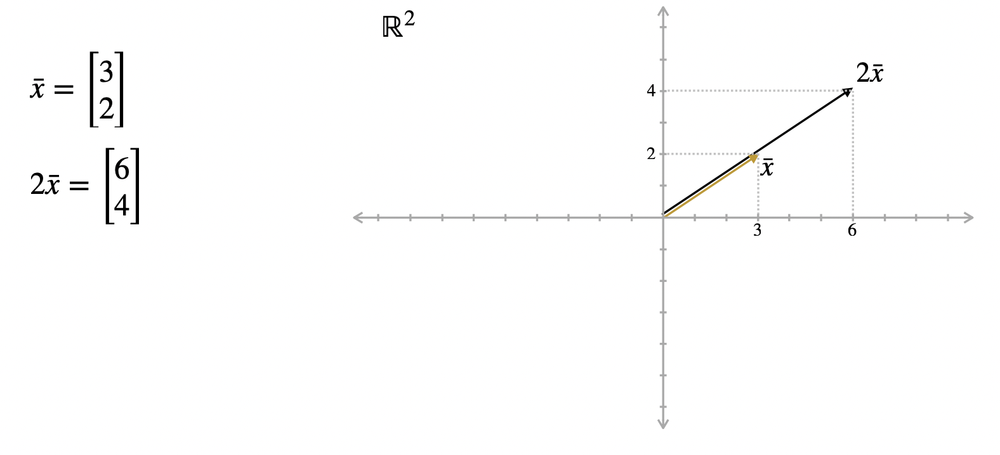
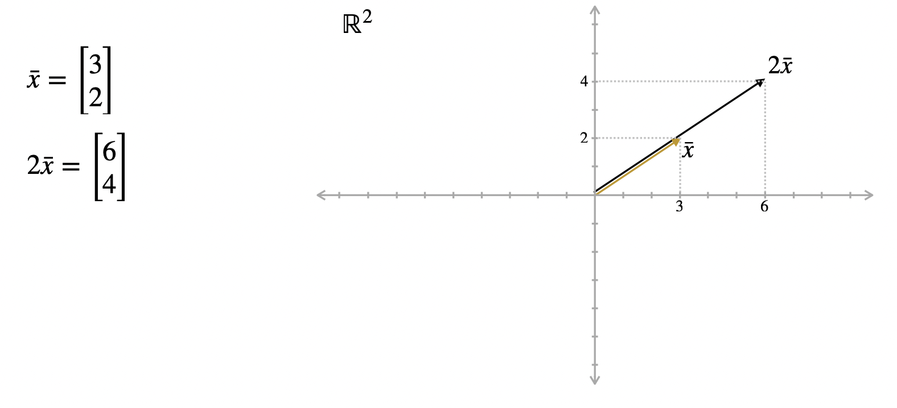
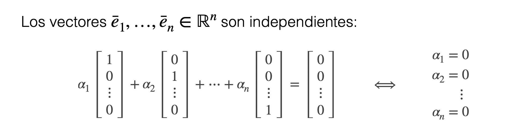

1 Vectores
Conceptos Básicos de Vectores
1.1 Conceptos Generales
- Vectores:
- Un vector es un arreglo unidimensional de números reales
Su notación según nos convenga, escribiremos el vector como una fila o una columna.
Cuando trabajamos con vectores de dimensión n decimos que estamos en el espacio vectorial \mathbb{R}^n
1.2 Operaciones de Suma sobre Vectores
1.2.1 Geométricamente
1.2.2 Propiedades
1.3 Operación de Ponderación de Vectores
1.3.1 Geométricamente
 

1.3.2 Propiedades de Ponderación de Vectores
1.4 Norma
\|\bar{x}\| \sqrt{x_1^2+\cdot\cdot\cdot+x_n^2}
1.5 Distancia \mathbb{R}^n
La norma nos permite definir la distancia entre vectores en \mathbb{R}^n
La distancia entre \bar{x} e \bar{y} = \|\bar{x}-\bar{y}\|
1.6 Producto punto o interno
1.7 Ortogonalidad
Los vectores \bar{x} e \bar{y} en \mathbb{R}^n son ortogonales si \bar{x} \cdot\bar{y}=0

1.8 Subespacios Vectoriales
Un conjunto de vectores S \subseteq \mathbb{R}^n es un subespacio vectorial de \mathbb{R}^n si:
1.8.1 Ejeplos de subespacios vectoriales
1.9 Combinaciones Lineales
Una combinación lineal de vectores \bar{x}_1, ..., \bar{x}_m\in \mathbb{R}^n es un vector en la forma:
\alpha_1\bar{x}_1+ \cdot\cdot\cdot +\alpha_m\bar{x}_m
Donde \alpha_1+ \cdot\cdot\cdot +\alpha_m \in \mathbb{R}
Ejemplos de Combinación lineal
1.10 Espacio generado (span)
El espacio generado por vectores \bar{x}_1, ..., \bar{x}_m\in \mathbb{R}^n es el conjunto de todas las combinaciones lineales de \bar{x}_1, ..., \bar{x}_m
En símbolos:
span(\bar{x}_1, ..., \bar{x}_m)=\{\alpha_1\bar{x}_1+ \cdot\cdot\cdot +\alpha_m\bar{x}_m \ |\ \alpha_1, ...,\alpha_{m} \in \mathbb{R}\}
1.11 Independencia lineal

1.12 Bases
Ejemplos de Base:
1.12.1 Bases y Dimensión
Dos propiedades claves acerca de bases:
La última proposición nos permite definir la dimensión de un subespacio vectorial S de \mathbb{R}^n como el tamaño de sus bases.
1.12.2 Bases como sistemas de coordenadas
Debido a la siguiente proposición, una base siempre provee un sistema de coordenadas para el espacio.
1.12.3 Bases ortonormales
Una base ortonormal B de un subespacio vectorial S de \mathbb{R}^n es una base de S que satisface:
- Los vectores en B son ortogonales entre sí (par a par)
- La norma de cada vector en B es 1
El “cambio de coordenada” a una base ortonormal es mucho más simple:
Una propiedad clave es la siguiente:
De hecho, existe un procedimiento para transformar una base arbitraria a otra base ortonormal de manera que el span es el mismo (proceso de Gram-Schmidt)
1.12.4 Bases Canónicas

De hecho, son ortogonales y tienen norma 1 * La base canónica es una base ortonormal